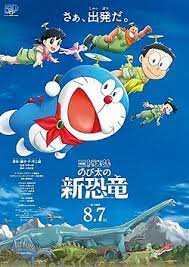

大雄的新恐龍

2020 年上映的哆啦A夢電影，哆啦A夢 50 周年紀念電影，也是哆啦A夢史上第一部因不可抗力延後上映的電影。與《大雄的恐龍》跟《新大雄的恐龍》不同，是完全原創的故事。由《大雄的金銀島》王牌組合今井一曉與川村元氣再度合體，創作出敘述大雄的成長與進化的故事，在台灣創下了哆啦A夢史上最高的票房紀錄。
大雄到恐龍博物館體驗挖掘化石，偶然發現了一個化石，他相信這絕對是恐龍的化石，於是使用哆啦A夢的道具「時光布」讓道具回歸原本的狀態，結果誕生了雙生的恐龍小Q跟小妙！不過，這2隻恐龍似乎是之前沒被發現過的新種類。
角色分配完整，劇情編排得宜，笑點不像過去部分哆啦A夢電影般矯揉造作，畫風一直維持穩定而沒有「崩壞」，技術與音效上也有讓人身歷其境的體驗，不僅有舊傳承，同時有新嘗試，這些都讓這部《大雄的新恐龍》成為一部可稱得上「承先啟後」的成熟作品，無愧於「哆啦A夢50週年紀念作品」與「《哆啦A夢》電影第40部作品」之名。